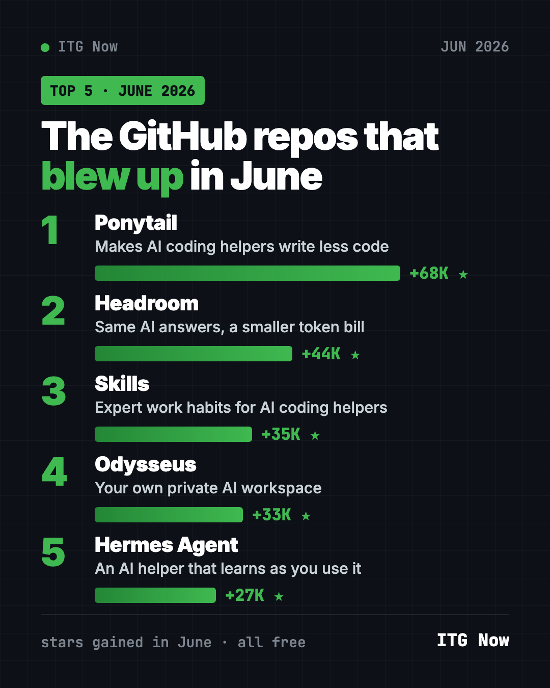
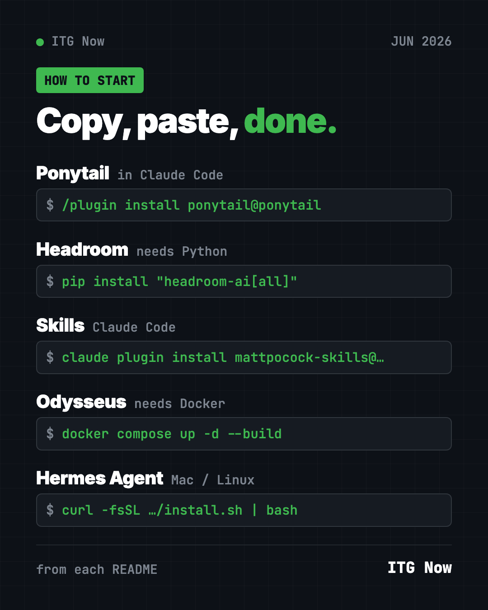

Best GitHub Repos of June 2026 (Free AI Tools)
- Top repos
- Published 2026-10-15
- 11 min read
- Updated 2026-10-16
- By the It's Trending Global team
The best GitHub repos of June 2026: 5 free tools that make AI helpers simpler, cheaper and smarter, plus a private AI workspace, explained simply.
The best GitHub repos June 2026 had to offer were Ponytail, Headroom, Matt Pocock's Skills, Odysseus and Hermes Agent. All five are free and open source, and each gained at least 27,000 GitHub stars in a single month.
A GitHub star is like a bookmark or a "like." June had a clear theme: tools that make AI helpers work better. Three of the five plug into AI coding helpers like Claude Code and Codex. The other two are AI assistants you run yourself. For each one you get plain-word ideas, the exact setup command, and a prompt you can hand to an AI helper.
Key takeaways
- Ponytail was the top repo of June 2026, with about 68,000 new stars. It teaches AI coding helpers to write less, simpler code.
- Headroom shrinks what your AI helper reads, so each job costs less.
- Matt Pocock's Skills is a pack of small, proven habits for AI coding helpers, like asking you questions before it builds.
- Odysseus is a private AI workspace for chat, research, documents, email and notes that runs on your own machine.
- Hermes Agent is an AI assistant that learns from what it does and can chat with you in Telegram, WhatsApp or Slack.

The 5 best GitHub repos of June 2026 at a glance
| Repo | What it does | Who it's for | Free? | Works with |
|---|---|---|---|---|
| Ponytail | Makes AI coding helpers write less code | Anyone who builds with Claude Code or Codex | Yes (MIT) | Claude Code, Codex, Cursor and more |
| Headroom | Shrinks what AI reads to cut the bill | Heavy AI helper users | Yes (Apache-2.0) | Claude Code, Codex, Cursor and more |
| Skills | Small, proven work habits for AI helpers | Builders who want fewer AI mistakes | Yes (MIT) | Claude Code, Codex, Copilot, Gemini CLI |
| Odysseus | Private AI workspace on your own machine | Privacy fans, small teams | Yes (AGPL-3.0) | Any computer with Docker |
| Hermes Agent | AI assistant that learns as you use it | People who want a helper in their chat apps | Yes (MIT), AI model use may cost money | Mac, Linux, Windows |
Star gains are for June 2026 only. Total star counts below were checked on GitHub on October 16, 2026.
💡 Tip: Some steps use the "terminal." That is a plain text window where you type commands. On a Mac, open the app called Terminal. On Windows, open PowerShell. Paste a line, press Enter, and wait.
1. Ponytail: the lazy senior developer inside your AI
Stars: +68K in June · about 164K total
What it is: Ponytail is a free add-on for AI coding helpers. Picture the quiet senior developer who looks at your fifty lines and replaces them with one. Ponytail puts that person inside your AI. Before writing anything, it checks whether the job is already done somewhere in your project. Its README reports that in its own Claude Code test, it cut code by 53% and cost by 26%. It also says it never skips safety checks, error handling or accessibility.
Who it's for: Anyone who uses Claude Code, Codex, Cursor or a similar helper and is tired of bloated answers.
How you'd use it:
- Ask for a small feature and get a few lines instead of a new library.
- Run
/ponytail-reviewto have your recent changes checked for bugs and extra code. - Run
/ponytail-auditon a whole project to see what you can delete first.
Install it: In Claude Code, paste these two lines one at a time:
/plugin marketplace add DietrichGebert/ponytail
/plugin install ponytail@ponytail
For Codex, copy and paste this into your terminal instead:
codex plugin marketplace add DietrichGebert/ponytail
codex plugin add ponytail@ponytail
Or let Claude or Codex do it: Claude Code and OpenAI Codex are AI helpers that can run setup steps for you. Paste this:
Install the Ponytail plugin from https://github.com/DietrichGebert/ponytail
following its README. Then show me the difference by building a tiny
to-do list page with it turned on.
⚠️ Heads up: The author says to install Ponytail only from DietrichGebert/ponytail on GitHub or its official npm package. Copies elsewhere may not be safe.
See Ponytail on GitHub · Read the full guide
2. Headroom: same AI answers, smaller bill
Stars: +44K in June · about 75K total
What it is: AI services charge by the "token," a small chunk of text. Your AI helper reads a lot of tokens: logs, files, search results. Headroom squeezes all of that down before the AI sees it. Its GitHub page says that means about 20% fewer tokens for coding helpers and 60 to 95% fewer for data files, with the same answers. The squeezing runs on your computer, so your files are not sent anywhere to be compressed.
Who it's for: People who use AI helpers a lot and watch their monthly bill or usage limits.
How you'd use it:
- Wrap Claude Code once, then keep working as usual while it spends less.
- Check a live savings dashboard to see how many tokens you saved.
- Let it remember lessons from failed sessions so the AI repeats fewer mistakes.
Install it: You need Python first. Then copy and paste this:
pip install "headroom-ai[all]"
headroom wrap claude
Swap claude for codex, cursor or another helper on its list. Run headroom doctor to check it works.
Or let Claude or Codex do it:
Install Headroom from https://github.com/headroomlabs-ai/headroom following
its "Get started" steps. Wrap my Claude Code with it, run headroom doctor,
and show me how to open the savings dashboard.
See Headroom on GitHub · Read the full guide
3. Skills: expert work habits for your AI helper
Stars: +35K in June · about 293K total
What it is: Matt Pocock is a well-known teacher of web coding. This repo shares the "skills" he uses every day. A skill is a short set of instructions an AI follows for one kind of job. The most popular one, /grill-me, makes the AI ask you detailed questions before it starts. That stops it building the wrong thing. Others help it write tests first, fix bugs step by step, or plan big jobs.
Who it's for: Anyone who has asked an AI to build something and got the wrong result.
How you'd use it:
- Type
/grill-mebefore a new idea, even a non-code plan, and answer its questions. - Use
/tddso the AI checks its own work with tests as it goes. - Use
/handoffto sum up a long chat so a fresh session can pick it up.
Install it: For Claude Code, copy and paste this into your terminal:
claude plugin install mattpocock-skills@claude-plugins-official
Then, inside your project, run /setup-matt-pocock-skills once. It asks a few setup questions.
Or let Claude or Codex do it:
Install Matt Pocock's skills from https://github.com/mattpocock/skills
following the README for this agent. Run setup-matt-pocock-skills, then
use grill-me to help me plan a simple personal budget spreadsheet.
See Skills on GitHub · Read the full guide

4. Odysseus: your own private AI workspace
Stars: +33K in June · about 94K total
What it is: Odysseus is a self-hosted AI workspace. "Self-hosted" means it runs on a computer you control, not on a company's servers. In one place you get AI chat and agents, deep web research with reports, a document editor, an email inbox with summaries, plus notes, tasks and a calendar. It can use AI models running on your machine or online ones you connect.
Who it's for: People who care about privacy, small teams, and tinkerers who want one home for their AI work.
How you'd use it:
- Ask it to research a topic on the web and write you a sourced report.
- Let it sort your inbox and draft replies for you to check.
- Compare two AI models side by side without knowing which is which.
Install it: You need Docker, a free app that runs packaged software. Then copy and paste this:
git clone https://github.com/odysseus-dev/odysseus.git
cd odysseus
cp .env.example .env
docker compose up -d --build
Open http://localhost:7011 in your browser. The first admin password is printed by docker compose logs odysseus.
Or let Claude or Codex do it:
Set up Odysseus from https://github.com/odysseus-dev/odysseus using its
Quick Start. Install Docker first if it is missing. Then find the first
admin password in the logs and open it in my browser.
⚠️ Heads up: Odysseus has strong tools, like file and shell access. The README says to keep login turned on if anyone else on your network could reach it.
See Odysseus on GitHub · Read the full guide
5. Hermes Agent: the AI helper that learns as you use it
Stars: +27K in June · about 254K total
What it is: Hermes Agent is a free AI assistant from Nous Research. Its big idea is a learning loop. After a hard task, it writes down how it did it as a new skill, then improves that skill over time. It remembers you across chats. You can talk to it in your terminal or through Telegram, Discord, Slack, WhatsApp or Signal. It can also run jobs on a schedule, like a daily report.
Who it's for: People who want one AI helper that lives in the chat apps they already use.
How you'd use it:
- Ask it on Telegram to send you a short news summary every morning.
- Send a voice memo and have it turn that into a to-do list.
- Have it run a weekly check on a folder and message you the results.
Install it: On Mac, Linux or WSL2, copy and paste this:
curl -fsSL https://hermes-agent.nousresearch.com/install.sh | bash
On Windows, paste this into PowerShell:
iex (irm https://hermes-agent.nousresearch.com/install.ps1)
Then type hermes setup to pick your AI model, and hermes to start chatting.
Or let Claude or Codex do it:
Install Hermes Agent from https://github.com/NousResearch/hermes-agent
using its Quick Install. Run hermes setup with me, explain each choice
in plain words, and help me connect it to Telegram.
Hermes itself is free. The AI model you connect, like OpenAI or OpenRouter, may charge for use.
See Hermes Agent on GitHub · Read the full guide
Which one should you try first?
- You build with Claude Code or Codex and want cleaner results: start with Ponytail. Two lines and you are done.
- Your AI bill or usage limit worries you: try Headroom.
- Your AI keeps building the wrong thing: try Skills and start with
/grill-me. - You want your AI work private and in one place: try Odysseus. Be ready to install Docker.
- You want a helper in your phone's chat apps: try Hermes Agent.
Brand new to all this? Hermes Agent is the friendliest start. Its installer does the heavy lifting.
For the bigger picture, read June 2026 in AI. Then see what came next in July's top repos, or the 5 biggest GitHub repos of Q2 2026.
FAQ
What were the best GitHub repos of June 2026?
The top five by stars gained were Ponytail, Headroom, Matt Pocock's Skills, Odysseus and Hermes Agent. Each gained between about 27,000 and 68,000 stars in June.
Are these GitHub repos free?
Yes. All five are free and open source. Hermes Agent and Odysseus can connect to paid AI models, but that depends on which model you pick.
Do I need to know how to code?
Not to install them. You can paste our ready-made prompt into Claude Code or Codex and let it do the setup. Ponytail, Headroom and Skills are most useful if you already build things with an AI helper.
What are the best GitHub repos for Claude Code from June 2026?
Ponytail, Headroom and Matt Pocock's Skills all plug straight into Claude Code. Ponytail trims the code, Headroom trims the cost, and Skills adds better work habits.
What does "stars gained" mean?
A GitHub star is like a bookmark. Stars gained is how many new stars a project got during the month. It shows what people are excited about right now.
Want a new free tool explained every day? Follow ITG Now on Instagram.
Keep reading

Trending GitHub Repos October 2026: The Top 5 So Far
The trending GitHub repos of October 2026 so far: a free Photoshop-style editor, an AI art studio, a big AI model for gaming PCs and more, explained.

Trending GitHub Repos This Week, Oct 5 2026: The Top 5
Trending GitHub repos this week Oct 5 2026: Matt Pocock's skills, the openGym workout tracker, e2e testing, HyperFrames video and claude-mem memory.

GitHub Trending September 28, 2026: Hindsight and Paperclip
GitHub trending September 28 2026: Hindsight, Paperclip, NVIDIA's OpenShell and a free 542-lesson AI course, with setup steps for each.